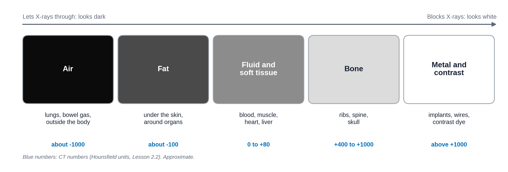
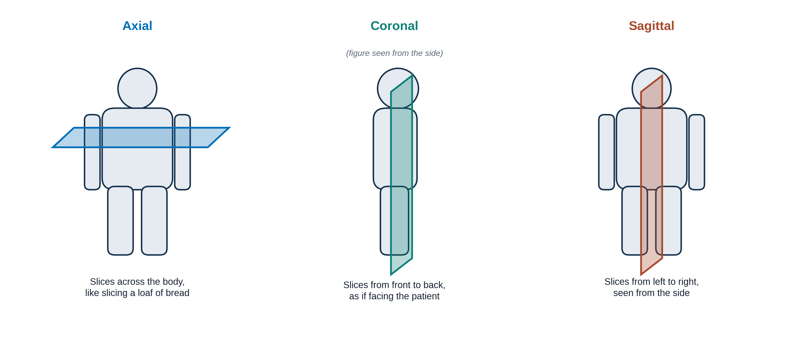
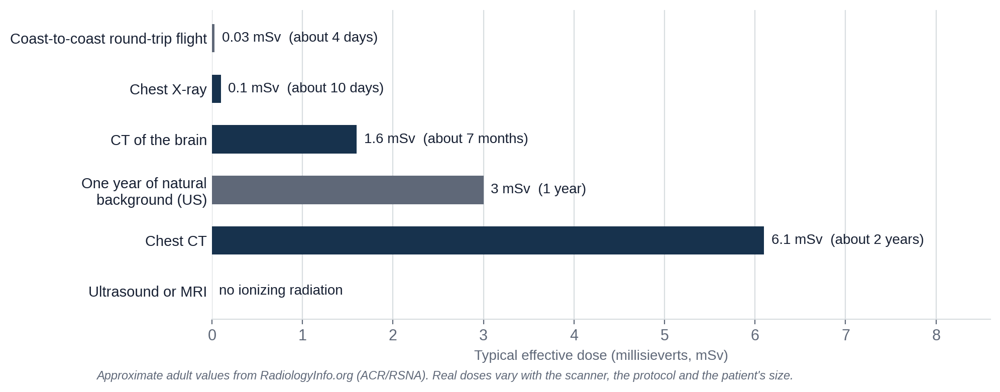

Overview
Module 1 showed how AI learns from examples. Most medical AI tools so far have been built for radiology, so this module covers radiology itself: what it is, how images are made and stored, how a scan moves through the hospital, and how to read the report at the end. You do not need any radiology background. About 15-20 minutes.
By the end of this lesson you can:
- Say what radiology is and who works in it.
- Name the five main imaging tools and one strength and one limit of each.
- Explain why some things look white and others black on an image.
- Name the three planes used to slice the body, and know which side of the screen is the patient's left.
- Describe, in plain words, the radiation and contrast questions to ask before a scan.
Mr. Diaz is 62. He comes to the emergency department (ED) at 1 a.m. with sudden shortness of breath and pain on the right side of his chest when he breathes in. He flew home from overseas yesterday: 14 hours in a seat. The team worries about a pulmonary embolism (PE), a blood clot that has travelled to the arteries of the lungs. We will follow Mr. Diaz through all four lessons of this module, from the first scan to the report.
What radiology is
Radiology is the branch of medicine that uses images of the inside of the body to find and follow disease, and sometimes to treat it. Imaging lets doctors see a broken bone, a bleed in the brain or a clot in the lungs without opening the body.
A radiologist is a physician. After medical school, radiologists in the United States train for five more years (one general year and four years of radiology residency), and many add a fellowship year in one area, such as chest, brain (neuroradiology) or breast imaging. Most of their day is spent interpreting images: looking at them, deciding what they show, and writing a report for the doctor who asked for the scan. Lesson 2.4 shows you how to read that report.
Radiologists rarely meet the patient during a scan. The people the patient does meet are the technologists who run the scanners. You will meet the whole team at the end of this lesson.
The five main imaging tools
Each imaging tool is called a modality. They work in very different ways, so each is good at different things. Click through the five.
X-ray (radiograph)
The oldest, fastest and most common imaging test
A machine sends a short burst of X-rays through the body onto a detector on the other side. Dense parts, like bone, block X-rays and look white. Air lets them through and looks black. The result is one flat picture, called a radiograph or "film." Because it is flat, everything in the beam's path is stacked on top of everything else, like a shadow.
Good at / limits
- Good at: bones, the lungs and heart outline, tubes and lines in the chest. Takes seconds, cheap, can be done at the bedside ("portable").
- Limits: flat, so things overlap; poor at soft tissue such as the brain or liver. Uses a small dose of radiation.
- Relatives: mammography (low-dose X-ray of the breast) and fluoroscopy (live X-ray video, for example to watch a swallow).
CT (computed tomography)
X-rays from every angle, turned into slices by a computer
The patient lies on a table that slides through a ring. Inside the ring, an X-ray tube spins around the body, and a computer combines the measurements from every angle into thin cross-sectional slices, like slices of a loaf of bread. Nothing overlaps, so CT shows far more than a radiograph. A whole chest takes a few seconds.
Good at / limits
- Good at: emergencies. Bleeding in the brain, injuries after trauma, lung disease, kidney stones, and clots in the lung arteries (Mr. Diaz).
- Limits: more radiation than an X-ray. Many CT scans need contrast dye injected into a vein (see below).
MRI (magnetic resonance imaging)
A strong magnet and radio waves, no X-rays
The patient lies inside a very strong magnet. Radio waves nudge the hydrogen atoms in the body's water and fat, and the scanner listens to the signals they send back as they settle. Different tissues settle at different speeds, which gives MRI its excellent soft-tissue detail. One exam is made of several sequences, each showing tissues in a different way.
Good at / limits
- Good at: brain, spinal cord, joints and ligaments, liver and prostate. Uses no ionizing radiation.
- Limits: slow (often 20-60 minutes), loud and enclosed, expensive. The magnet is always on, so metal objects and some implants, such as certain pacemakers, are dangerous. Every patient is screened first.
Ultrasound
Sound waves and their echoes, in real time
A handheld probe sends high-pitched sound into the body and listens for the echoes, like a ship's sonar. The picture moves live on the screen. Doppler ultrasound also shows blood flowing through vessels. The person holding the probe is usually a sonographer, and the quality of the exam depends a lot on their skill.
Good at / limits
- Good at: pregnancy, the gallbladder, kidneys, thyroid, the heart (echocardiography), blood flow, guiding needles. No radiation, cheap, portable.
- Limits: sound cannot pass through bone or gas, so it cannot see the brain in adults or most of the lungs. Hard to repeat exactly the same way.
Nuclear medicine and PET
Shows what tissue is doing, not just its shape
The patient receives a tiny amount of a radioactive tracer, usually by injection. The tracer is attached to a substance the body uses, and a special camera records where it collects. PET (positron emission tomography) often uses a tracer made from sugar, which builds up in busy cells such as many cancers. PET is usually combined with a CT in the same visit (PET/CT) to match the activity to the anatomy.
Good at / limits
- Good at: finding where cancer has spread, bone scans, thyroid function, blood flow to the heart muscle.
- Limits: blurrier than CT or MRI; the tracer gives a radiation dose; takes time for the tracer to spread.
Watch (optional, 4-6 minutes each): short animations from the U.S. National Institute of Biomedical Imaging and Bioengineering (NIBIB). Pick the one or two you know least about.


Why things look white or black
On X-ray and CT, brightness tells you how much a tissue blocks the X-rays, which mostly depends on how dense it is. The denser the material, the more X-rays it stops, and the whiter it looks. Before you see the scale, try to build it yourself.
Drag these five things into the order they appear on a CT scan, from black at the top to white at the bottom.
- A rib
- Fat under the skin
- A metal surgical clip
- Air in the lungs
- The heart muscle
There are only five basic densities to learn:

That is why a chest X-ray looks the way it does: black lungs (full of air), white ribs and spine (bone), and a gray heart in the middle (blood and muscle). A pneumothorax, from Module 1, shows up as a black area with no lung markings, because air has leaked outside the lung.
A normal frontal chest X-ray with the five densities labeled (air in the lungs, fat under the skin, soft tissue of the heart, bone of the ribs, metal of an ECG lead or clip if present).
One axial chest CT slice at about the same level, labeled the same way, to show that the same rule holds on CT.
Each modality has its own words for "brighter" and "darker." You will see these words in reports (Lesson 2.4):
| Modality | Brighter (whiter) | Darker (blacker) |
|---|---|---|
| X-ray | opaque, "opacity" | lucent, "lucency" |
| CT | hyperdense | hypodense |
| MRI | hyperintense (bright signal) | hypointense (dark signal) |
| Ultrasound | hyperechoic (more echoes) | hypoechoic; anechoic means no echoes at all, as in fluid |
Slices and planes
CT and MRI produce stacks of slices. A slice can be cut in three directions, called planes:

One rule surprises almost everyone. Images are shown as if you are facing the patient. On an axial slice you are looking up from the patient's feet. Either way, the patient's right side is on the left of your screen, and their left is on your right. A marker letter ("R" or "L") on the image confirms it. Mixing up sides is a classic and dangerous error.
For chest X-rays you will also hear PA and AP. PA (posterior to anterior) means the X-rays enter through the back and the patient stands facing the detector: the standard view. AP means the beam enters from the front, usually because the patient is lying in bed. AP films make the heart look larger, which matters when you compare them.
Radiation and contrast: what to ask before a scan
X-ray, CT, fluoroscopy and nuclear medicine use ionizing radiation: energy strong enough to damage DNA. At the doses used in imaging, the risk to one person is very small, but it is not zero, and it adds up over many scans. Ultrasound and MRI use no ionizing radiation.
Dose is measured in millisieverts (mSv). A helpful way to picture it is to compare it with the natural background radiation everyone receives from the ground, the air and space, about 3 mSv a year in the United States.

Radiology follows a principle called ALARA: "as low as reasonably achievable." In practice it means: only scan when the answer will change what you do, choose a test without radiation when it can answer the question, and use the lowest dose that still gives a good picture. Children and pregnant patients get extra care, because they are more sensitive to radiation. A pregnancy question is asked before most scans in people who could be pregnant.
Contrast (contrast agent, or "dye") is a substance given to make blood vessels or organs stand out. For CT it is usually iodine-based, injected into a vein; for MRI it is gadolinium-based. Mr. Diaz's scan needs contrast, because a clot only shows up as a dark gap inside a bright, contrast-filled artery. Before contrast, the team checks:
- Kidney function, usually with a blood test (creatinine), because the kidneys clear the contrast.
- Prior reactions to contrast. Most reactions are mild, like hives; serious ones are rare. Patients with a past reaction may get medicine beforehand or a different test.
- For MRI: metal and implants, with a safety screening form.
Patients ask about these all the time. Decide whether each statement is a myth or a fact.
Which scan would you order?
Choosing the right test means matching the question to the tool's strengths, while keeping radiation, cost and time in mind. Lesson 2.3 shows the guidelines doctors use. For now, use what you just learned.
Pick the best first imaging test for each patient. Real choices depend on the patient and the hospital, but each of these has a usual answer.
Who does what
Many people touch every scan. These are the ones you will work with most:
A short (under 5 minutes) "day in the life of a radiologist" video showing the reading room, the workstation and a phone call with a clinician. Opens on YouTube in a new tab.
Knowledge check
Answer each question to continue. Any answer is fine; read the explanation.
Which two modalities use no ionizing radiation?
MRI uses a magnet and radio waves; ultrasound uses sound. X-ray, CT, fluoroscopy and nuclear medicine all give a radiation dose.
On a chest X-ray, why do the lungs look dark and the ribs white?
Brightness reflects how much X-ray gets blocked. Air blocks almost none (black), bone blocks a lot (white), and soft tissue is in between (gray).
You are looking at an axial CT slice of Mr. Diaz's chest. Where on the screen is his left lung?
Images are displayed as if you are facing the patient (on axial slices, looking up from the feet), so the patient's left is on your right. Always check the R or L marker.
Key takeaways
- Radiology uses images of the inside of the body to find, follow and sometimes treat disease. Radiologists are physicians who interpret images and write reports.
- The five main modalities are X-ray, CT, MRI, ultrasound and nuclear medicine. Each has its own strengths and limits.
- On X-ray and CT, denser tissue looks whiter: air, fat, soft tissue, bone, then metal and contrast.
- Slices come in axial, coronal and sagittal planes. The patient's right is on the left of the screen.
- Before a scan, ask whether it will change management, whether a test without radiation could answer it, and whether contrast is safe for this patient.
Go further (optional)
- Your radiologist (RadiologyInfo.org, from the ACR and RSNA: who radiologists are and what they do)
- CT of the body, MRI of the body, general ultrasound, nuclear medicine (RadiologyInfo.org patient pages, written in plain language)
- Radiation dose in X-ray and CT exams (RadiologyInfo.org, with a dose table for many exams)
- Contrast materials (RadiologyInfo.org)
Next lesson: Mr. Diaz's CT is done. What exactly did the scanner produce, and what does a computer (or an AI) actually receive?